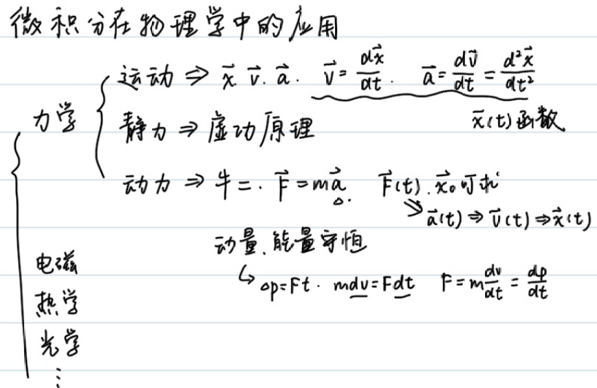
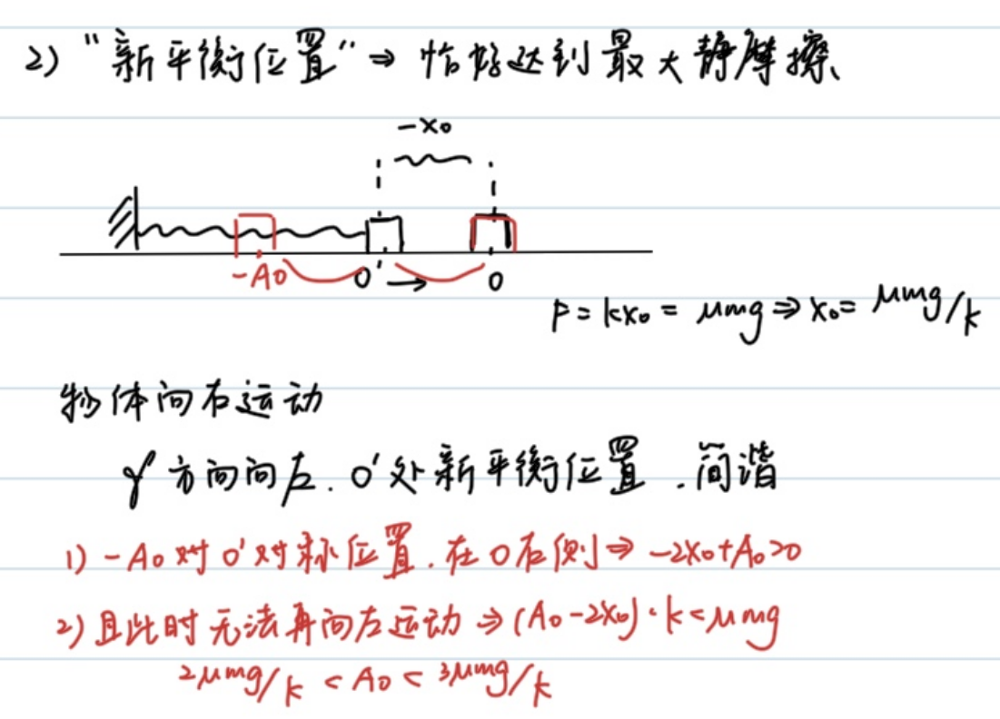
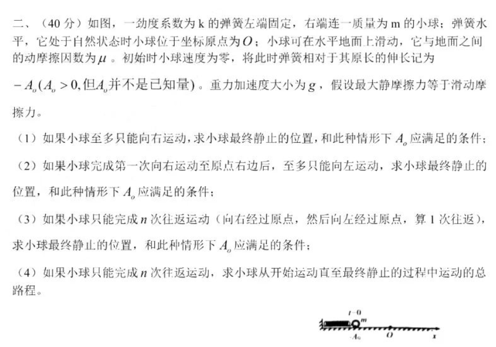
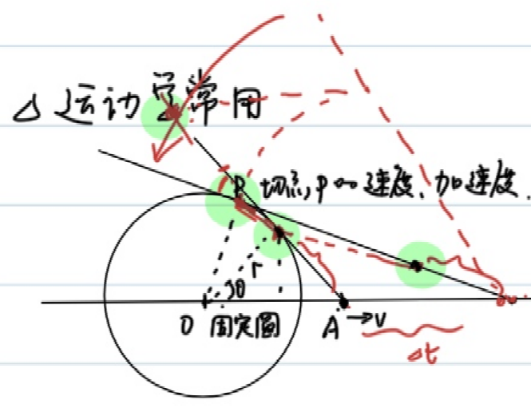
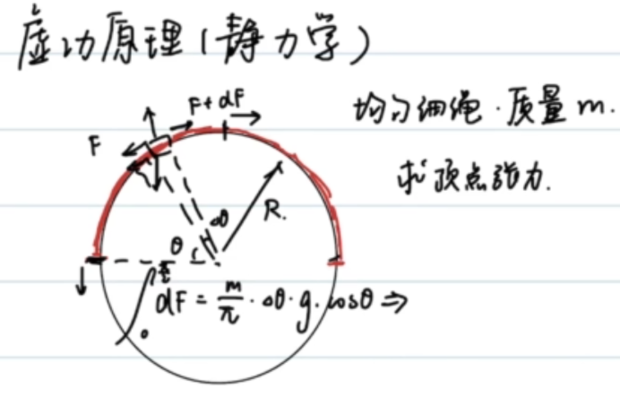
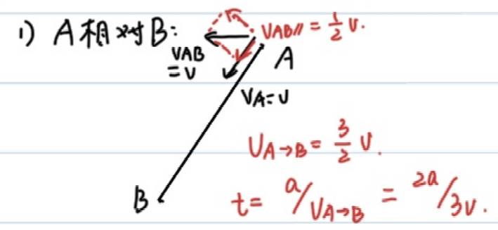
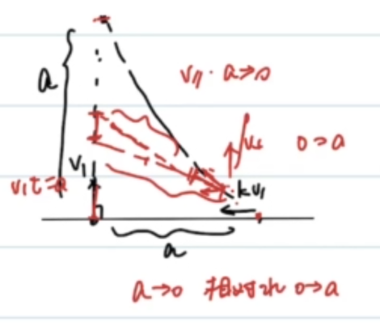
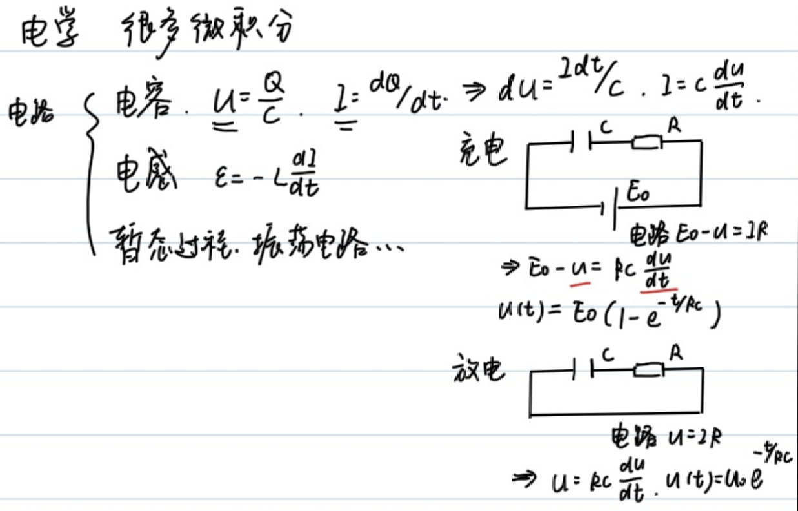

<meta data-alternate="https://freshmark.sunisalex.org/en/posts/physics/basic-calculus-04/" data-article="true" data-canonical="https://freshmark.sunisalex.org/posts/physics/basic-calculus-04/" data-description="以微积分为工具求解物理问题：从机械能守恒、简谐运动与弹性势能，到曲率半径、虚功原理与变质量绳，再到微元法运动学与刚体转动惯量，串联力学中的微分方程与积分思想。" data-freshmark-page data-title="微积分基础导论:微积分应用2 — Freshmark"><main><header class="container article-header"><a href="/" class="back-link">← 返回全部文章</a><p class="eyebrow article-subject">物理</p><h1>微积分基础导论:微积分应用2</h1><p class="article-dek">以微积分为工具求解物理问题：从机械能守恒、简谐运动与弹性势能，到曲率半径、虚功原理与变质量绳，再到微元法运动学与刚体转动惯量，串联力学中的微分方程与积分思想。</p><div class="article-meta"><time datetime="2026-05-26">2026年5月26日</time><span>4 分钟阅读</span><span>物理竞赛 · 微积分</span><span class="view-count" data-article-view-count hidden>本文访问量 <strong data-article-views></strong></span><a href="index.md" download>下载 Markdown</a><button type="button" class="article-share" data-share-article data-share-text="以微积分为工具求解物理问题：从机械能守恒、简谐运动与弹性势能，到曲率半径、虚功原理与变质量绳，再到微元法运动学与刚体转动惯量，串联力学中的微分方程与积分思想。" data-share-title="微积分基础导论:微积分应用2"><span data-share-label>分享文章</span></button><output aria-live="polite" class="visually-hidden" data-share-status role="status"></output></div></header><div class="article-wrap"><aside class="toc"><div class="toc-head"><p>本文目录</p><button type="button" class="toc-toggle" aria-expanded="false" aria-label="展开或收起目录" data-toc-toggle><span class="toc-toggle-label">目录</span><span class="toc-toggle-icon" aria-hidden="true"></span></button></div><nav aria-label="目录" class="toc-links" data-toc-links><a href="#例1" class="toc-level-3">例1</a><a href="#例2" class="toc-level-3">例2</a><a href="#例3" class="toc-level-3">例3</a><a href="#曲率半径" class="toc-level-2">曲率半径</a><a href="#例4" class="toc-level-3">例4</a><a href="#例5" class="toc-level-3">例5</a><a href="#例6" class="toc-level-3">例6</a><a href="#例7虚功原理" class="toc-level-3">例7(虚功原理)</a><a href="#例8必错题" class="toc-level-3">例8(必错题)</a><a href="#例9微元法运动学" class="toc-level-3">例9(&quot;微元法&quot;运动学)</a><a href="#转动惯量" class="toc-level-2">转动惯量</a><a href="#质点系牛顿第二定律" class="toc-level-3">质点系牛顿第二定律</a><a href="#科尼希质心运动定理" class="toc-level-3">科尼希(质心运动)定理</a><a href="#例10" class="toc-level-3">例10</a><a href="#例11" class="toc-level-3">例11</a><a href="#转动惯量平行轴定理" class="toc-level-3">转动惯量平行轴定理</a><a href="#例12" class="toc-level-3">例12</a><a href="#类比" class="toc-level-3">类比</a><a href="#展望prospect" class="toc-level-2">展望(Prospect)</a><a href="#总结" class="toc-level-2">总结</a></nav></aside><article class="prose"><p><picture class="responsive-picture"><source srcset="image.freshmark-97995839f070-480w.avif 480w, image.freshmark-97995839f070-864w.avif 864w" type="image/avif"><source srcset="image.freshmark-97995839f070-480w.webp 480w, image.freshmark-97995839f070-864w.webp 864w" type="image/webp"></picture></p><!--more--><h3 id="例1">例1</h3><p><span class="math-expression math-display" data-math-source="\begin{gathered} mgh+\frac{1}{2}mv^2=C\\ v=\frac{dh}{dt}\\ mgh+\frac{1}{2}m(\frac{dh}{dt})^2=C\\ \frac{dh}{dt}=\sqrt{\frac{2(C-mgh)}{m}}\\ dt=\sqrt{\frac{m}{2(C-mgh)}}dh=\frac{\sqrt{2}}{2}(\frac{c}{m}-gh)^\frac{-1}{2}dh\\ \int_0^t dt=\frac{\sqrt{2}}{2}\int_{h_0}^{h_t}(\frac{c}{m}-gh)^\frac{-1}{2}dh\\ t=-\frac{\sqrt{2}}{g}(\frac{C}{m}-gh_t)^\frac{1}{2}+C&#39; \end{gathered}" data-math-display></span></p><h3 id="例2">例2</h3><p>在简谐运动中：</p><p><span class="math-expression math-display" data-math-source="\begin{gathered} \vec{F}=-k\vec{x},\vec{v}=\frac{d\vec{x}}{dt},\vec{a}=\frac{d\vec{v}}{dt}=\frac{d^2\vec{x}}{dt^2}=\frac{-k}{m}x \end{gathered}" data-math-display></span></p><p>构建的微分方程:</p><p><span class="math-expression math-display" data-math-source="\frac{d^2\vec{x}}{dt^2}=\frac{-k}{m}x" data-math-display></span></p><p>备选的<span class="math-expression math-inline" data-math-source="x(t)"></span>:</p><ul><li><span class="math-expression math-inline" data-math-source="A\cos (\omega t+\phi)"></span></li><li><span class="math-expression math-inline" data-math-source="A\sin (\omega t+\phi)"></span></li><li><span class="math-expression math-inline" data-math-source="e^{\omega t+\phi}"></span></li></ul><p>但<span class="math-expression math-inline" data-math-source="\frac{-k}{m}\lt 0"></span>,可以排除<span class="math-expression math-inline" data-math-source="e^{\omega t+\phi}"></span></p><p>设<span class="math-expression math-inline" data-math-source="x(t)=A\sin (\omega t+\phi)"></span>,则:</p><p><span class="math-expression math-display" data-math-source="\begin{gathered} v(t)=Aw\cos(\omega t+\phi)\\ a(t)=-Aw^2\sin(\omega t+\phi)=\frac{-k}{m}A\sin(\omega t+\phi) \end{gathered}" data-math-display></span></p><p>解得:<span class="math-expression math-inline" data-math-source="\omega=\sqrt{\frac{k}{m}},\phi=\arcsin\frac{x_0}{A}"></span></p><p>结合机械能守恒,可以推出弹簧弹性势能的表达式:</p><p>在弹簧振子位于平衡位置时，设<span class="math-expression math-inline" data-math-source="E_{p_0}=0"></span>，弹性势能最小，速度最大.</p><p><span class="math-expression math-display" data-math-source="\begin{gathered} \frac{1}{2}mv^2+E_p=C\\ \omega=\sqrt{\frac{k}{m}}\\ v(t)=Aw\cos(\omega t+\phi)\\ C=\frac{1}{2}m(Aw)^2 \end{gathered}" data-math-display></span></p><p>解得:<span class="math-expression math-inline" data-math-source="E_p=\frac{1}{2}m(Aw\sin(\omega t+\phi))^2=\frac{1}{2}kx^2"></span></p><blockquote><p>[!NOTE] 熟知简谐运动可以与匀速圆周运动一一对应</p><p>圆上的一个点可以确定运动的<strong>位移</strong>与<strong>速度</strong>的<strong>大小及方向</strong></p></blockquote><p>对于简谐运动，如果做出<span class="math-expression math-inline" data-math-source="v-x"></span>图，那么图像将会是椭圆：</p><p><span class="math-expression math-display" data-math-source="\begin{cases} x=A\sin(\omega t+\phi)\\ y=A\omega\cos(\omega t+\phi)\\ \frac{x^2}{A^2}+\frac{y^2}{A^2\omega^2}=1 \end{cases}" data-math-display></span></p><p><picture class="responsive-picture"><source srcset="image-1.freshmark-5fb63319b3a3-480w.avif 480w, image-1.freshmark-5fb63319b3a3-960w.avif 960w, image-1.freshmark-5fb63319b3a3-1160w.avif 1160w" type="image/avif"><source srcset="image-1.freshmark-5fb63319b3a3-480w.webp 480w, image-1.freshmark-5fb63319b3a3-960w.webp 960w, image-1.freshmark-5fb63319b3a3-1160w.webp 1160w" type="image/webp"></picture></p><h3 id="例3">例3</h3><p>(35届复赛第二题-简化版)</p><p><picture class="responsive-picture"><source srcset="image-2.freshmark-5b22627898a2-480w.avif 480w, image-2.freshmark-5b22627898a2-960w.avif 960w, image-2.freshmark-5b22627898a2-1200w.avif 1200w" type="image/avif"><source srcset="image-2.freshmark-5b22627898a2-480w.webp 480w, image-2.freshmark-5b22627898a2-960w.webp 960w, image-2.freshmark-5b22627898a2-1200w.webp 1200w" type="image/webp"></picture></p><p>首先，为了在一开始能运动，必须满足:</p><p><span class="math-expression math-display" data-math-source="\begin{gathered} kA_0\gt \mu mg\\ A_0\gt \frac{\mu mg}{k} \end{gathered}" data-math-display></span></p><p>再列出运动过程的能量守恒:</p><p><span class="math-expression math-display" data-math-source="\begin{cases} \frac{1}{2}kA_0^2=\frac{1}{2}kx^2+(A_0+x)\mu mg,\\ kx\lt \mu mg \rightarrow x\in (0,\frac{\mu mg}{k}) \end{cases}" data-math-display></span></p><p>解得:</p><p><span class="math-expression math-display" data-math-source="\begin{gathered} A_0^2=x^2+\frac{2}{k}(A_0+x)\mu mg\in (\frac{2\mu mg}{k}A_0,\frac{2\mu mg}{k}A_0+\frac{3\mu^2 m^2g^2}{k^2}) \end{gathered}" data-math-display></span></p><p>即:</p><p><span class="math-expression math-display" data-math-source="\begin{gathered} (A_0-\frac{\mu mg}{k})^2\in (\frac{\mu^2 m^2g^2}{k^2},\frac{4\mu^2 m^2g^2}{k^2}) \end{gathered}" data-math-display></span></p><p>(Aha)最后得到: <span class="math-expression math-display" data-math-source="A_0\in (\frac{2\mu mg}{k},\frac{3\mu mg}{k})" data-math-display></span> 另解:(合成弹力和摩擦力，利用简谐运动的对称性)</p><p><picture class="responsive-picture"><source srcset="image-4.freshmark-09eb017af795-480w.avif 480w, image-4.freshmark-09eb017af795-960w.avif 960w, image-4.freshmark-09eb017af795-1101w.avif 1101w" type="image/avif"><source srcset="image-4.freshmark-09eb017af795-480w.webp 480w, image-4.freshmark-09eb017af795-960w.webp 960w, image-4.freshmark-09eb017af795-1101w.webp 1101w" type="image/webp"></picture></p><figure class="prose-figure"><picture class="responsive-picture"><source srcset="image-3.freshmark-75945a4347e0-480w.avif 480w, image-3.freshmark-75945a4347e0-960w.avif 960w, image-3.freshmark-75945a4347e0-1140w.avif 1140w" type="image/avif"><source srcset="image-3.freshmark-75945a4347e0-480w.webp 480w, image-3.freshmark-75945a4347e0-960w.webp 960w, image-3.freshmark-75945a4347e0-1140w.webp 1140w" type="image/webp"></picture><figcaption>原题目</figcaption></figure><h2 id="曲率半径">曲率半径</h2><p>一个曲线运动可以看成若干圆周运动的加和，各物理量满足:</p><p><span class="math-expression math-display" data-math-source="\begin{cases} \vec{F}=m\frac{\vec{v}^2}{\rho},\\ \vec{a_n}=\frac{\vec{v}^2}{\rho}\hat{n},\\ a_n = \frac{|\vec{a} \times \vec{v}|}{|\vec{v}|}, \quad a_t = \frac{\vec{a} \cdot \vec{v}}{|\vec{v}|} \end{cases}" data-math-display></span></p><h3 id="例4">例4</h3><p>求抛物线<span class="math-expression math-inline" data-math-source="y=x^2"></span>在<span class="math-expression math-inline" data-math-source="x=0"></span>处的曲率半径</p><p><span class="math-expression math-display" data-math-source="\begin{gathered} \vec{r}=(x,x^2)\\ \vec{v}=(\frac{dx}{dt},2x\frac{dx}{dt})\\ \vec{a}=(\frac{d^2x}{dt^2},2(\frac{dx}{dt})^2+2x\frac{d^2x}{dt^2}) \end{gathered}" data-math-display></span></p><p>不妨设<span class="math-expression math-inline" data-math-source="\frac{dx}{dt}=1"></span>,即质点在水平方向作匀速运动，在<span class="math-expression math-inline" data-math-source="x=0"></span>处，向心加速度沿y轴方向，切向加速度为0: <span class="math-expression math-display" data-math-source="a_n=|\vec{a}|=2,\vec{v}=(1,0),|v|=1,\rho=\frac{v^2}{a_n}=\frac{1}{2}" data-math-display></span></p><h3 id="例5">例5</h3><p>已知椭圆<span class="math-expression math-inline" data-math-source="\frac{x^2}{a^2}+\frac{y^2}{b^2}=1(a&gt;b&gt;0)"></span>,求端点处的曲率半径.</p><p>如果设水平速度恒定，会导致在长轴处出现问题;设竖直速度恒定，短轴处也会出问题</p><p>我们采取极坐标换元:</p><p><span class="math-expression math-display" data-math-source="\begin{gathered} \vec{x}=(a\cos(\omega t+\phi),b\sin(\omega t+\phi))\\ \vec{v}=(-a\omega\sin(\omega t+\phi),b\omega\cos(\omega t+\phi))\\ \vec{a}=(-a\omega^2\cos(\omega t+\phi),-b\omega^2\sin(\omega t+\phi)) \end{gathered}" data-math-display></span></p><p>在<span class="math-expression math-inline" data-math-source="(0,b)"></span>处，<span class="math-expression math-inline" data-math-source="\omega t+\phi=\frac{\pi}{2}"></span>.</p><p><span class="math-expression math-display" data-math-source="\begin{gathered} \vec{v}=(-a\omega,0)\\ \vec{a_n}=\vec{a}=(0,-b\omega^2)\\ \rho=\frac{|v|^2}{|a_n|}=\frac{a^2}{b} \end{gathered}" data-math-display></span></p><p>在<span class="math-expression math-inline" data-math-source="(a,0)"></span>处，<span class="math-expression math-inline" data-math-source="\omega t+\phi=0"></span>.</p><p><span class="math-expression math-display" data-math-source="\begin{gathered} \vec{v}=(0,b\omega)\\ \vec{a_n}=\vec{a}=(-a\omega^2,0)\\ \rho=\frac{|v|^2}{|a_n|}=\frac{b^2}{a} \end{gathered}" data-math-display></span></p><h3 id="例6">例6</h3><p>一根支在固定圆上的长木棍，一端A在地面上做速度为<span class="math-expression math-inline" data-math-source="v"></span>的匀速运动，求交点P与接触点E速度.</p><p><picture class="responsive-picture"><source srcset="image-6.freshmark-9bea694e87fd-480w.avif 480w, image-6.freshmark-9bea694e87fd-665w.avif 665w" type="image/avif"><source srcset="image-6.freshmark-9bea694e87fd-480w.webp 480w, image-6.freshmark-9bea694e87fd-665w.webp 665w" type="image/webp"></picture></p><p><span class="math-expression math-display" data-math-source="\begin{gathered} A(x,0)\\ \frac{dx}{dt}=v\\ P(\frac{r^2}{x},r\sqrt{1-\frac{r^2}{x^2}})\\ \vec{v_p}=(v\frac{-r^2}{x^2},v\frac{r^3}{x^3}\frac{1}{\sqrt{1-\frac{r^2}{x^2}}}) \end{gathered}" data-math-display></span></p><p>类似的，我们求接触点E速度。注意接触点的约束条件不是在圆上，而是到A点距离不变。</p><p><span class="math-expression math-display" data-math-source="\begin{gathered} \vec{AP}=(\frac{r^2}{x}-x,r\sqrt{1-\frac{r^2}{x^2}})\\ |AP|=\sqrt{x^2-r^2}\\ \vec{l}=\frac{\vec{AP}}{|AP|}=(-\frac{\sqrt{x^2-r^2}}{x},\frac{r}{x})\\ E=A+|AP|\\ E&#39;(t)=A&#39;+|AP|\vec{l}&#39;\\ =(v,0)+\sqrt{x^2-r^2}(-v\frac{2r^2}{x^3}\frac{1}{2\sqrt{1^2-\frac{r^2}{x^2}^2}},-v\frac{r}{x^2})\\ =(v(1-\frac{r^2}{x^2}),-v\frac{r}{x^2}\sqrt{x^2-r^2}) \end{gathered}" data-math-display></span></p><h3 id="例7虚功原理">例7(虚功原理)</h3><p>有一个圆上，其半圆部分放有均匀细绳，质量为<span class="math-expression math-inline" data-math-source="m"></span>,求顶点处的张力。</p><p><picture class="responsive-picture"><source srcset="image-5.freshmark-bd976fd2f7ac-480w.avif 480w, image-5.freshmark-bd976fd2f7ac-692w.avif 692w" type="image/avif"><source srcset="image-5.freshmark-bd976fd2f7ac-480w.webp 480w, image-5.freshmark-bd976fd2f7ac-692w.webp 692w" type="image/webp"></picture></p><p>对无数微小质元受力分析，考虑沿切线方向受力平衡:</p><p><span class="math-expression math-display" data-math-source="\begin{gathered} dF=\frac{d\theta}{\pi}mg\cos \theta\\ \int_{0}^{F}=\frac{mg}{\pi}\int_{0}^\frac{\pi}{2}\cos\theta d\theta\\ =\frac{mg}{\pi} \end{gathered}" data-math-display></span></p><p>当然，我们有一个技巧性强的做法：<strong>虚功原理</strong>.</p><p>缓慢把绳拉动<span class="math-expression math-inline" data-math-source="\Delta x"></span>,<span class="math-expression math-inline" data-math-source="F\Delta x=\frac{\Delta x}{\pi R}mgR"></span>,则<span class="math-expression math-inline" data-math-source="F=\frac{mg}{\pi}"></span></p><p><picture class="responsive-picture"><source srcset="image-7.freshmark-365cfca6c9c9-480w.avif 480w, image-7.freshmark-365cfca6c9c9-960w.avif 960w, image-7.freshmark-365cfca6c9c9-1224w.avif 1224w" type="image/avif"><source srcset="image-7.freshmark-365cfca6c9c9-480w.webp 480w, image-7.freshmark-365cfca6c9c9-960w.webp 960w, image-7.freshmark-365cfca6c9c9-1224w.webp 1224w" type="image/webp"></picture></p><p>使用虚功原理，可以较容易地解决2026朝阳高三二模T19(2)</p><h3 id="例8必错题">例8(必错题)</h3><p>地面上一根匀质细绳，长<span class="math-expression math-inline" data-math-source="l"></span>,线密度<span class="math-expression math-inline" data-math-source="\lambda"></span>,竖直向上的恒力<span class="math-expression math-inline" data-math-source="F_0"></span>拉绳一端，当绳恰好离开地面时的速度<span class="math-expression math-inline" data-math-source="v_t"></span>&#32;<picture class="responsive-picture"><source srcset="image-8.freshmark-837dbbe4e849-480w.avif 480w, image-8.freshmark-837dbbe4e849-960w.avif 960w, image-8.freshmark-837dbbe4e849-1221w.avif 1221w" type="image/avif"><source srcset="image-8.freshmark-837dbbe4e849-480w.webp 480w, image-8.freshmark-837dbbe4e849-960w.webp 960w, image-8.freshmark-837dbbe4e849-1221w.webp 1221w" type="image/webp"></picture></p><p><span class="math-expression math-display" data-math-source="\begin{gathered} \frac{1}{2}l\lambda gl+\frac{1}{2}l\lambda v_t^2=F_0l\\ v_t=\sqrt{2F_0/\lambda-gl} \end{gathered}" data-math-display></span></p><p>很不幸，这是一个<strong>标准错误</strong>。一根无张力绳拉直需要额外做功,此方法求出的<span class="math-expression math-inline" data-math-source="v_t"></span>偏大。</p><p>当绳端离地面<span class="math-expression math-inline" data-math-source="x"></span>时，若速度为<span class="math-expression math-inline" data-math-source="v"></span>,<span class="math-expression math-inline" data-math-source="\vec{v}=\frac{d\vec{x}}{dt}"></span>,再向上提升<span class="math-expression math-inline" data-math-source="\Delta x"></span>时:</p><p>动量定理:<span class="math-expression math-inline" data-math-source="Fdt=(x\lambda)dv+(dx \lambda)(v+dv)"></span></p><p>约去二阶小量： <span class="math-expression math-display" data-math-source="F=\lambda xdv+\lambda vdx=\lambda\frac{d(vx)}{dt}" data-math-display></span><span class="math-expression math-display" data-math-source="Fdt=\lambda d(vx)" data-math-display></span> 但是时间是不知道的，如果利用<span class="math-expression math-inline" data-math-source="dx=vdt"></span>，就可以解决此问题: <span class="math-expression math-display" data-math-source="Fx dx=\lambda vx(xdv+vdx)=\lambda (vx)d(vx)" data-math-display></span> 注意这里的<span class="math-expression math-inline" data-math-source="F"></span>均为合外力，<span class="math-expression math-inline" data-math-source="F=F_0-x\lambda g"></span>&#32;<span class="math-expression math-display" data-math-source="\int_0^l(F_0-x\lambda g)x dx=\int_{0}^{lv_t}\lambda (vx)d(vx)" data-math-display></span><span class="math-expression math-display" data-math-source="\frac{1}{2}F_0l^2-\frac{1}{3}\lambda gl^3=\lambda\frac{1}{2}(v_tl)^2" data-math-display></span><span class="math-expression math-display" data-math-source="\frac{1}{2}F_0-\frac{1}{3}\lambda gl=\lambda\frac{1}{2}(v_t)^2" data-math-display></span> 解得<span class="math-expression math-inline" data-math-source="v_t=\sqrt{F_0/\lambda-\frac{2}{3}gl}"></span></p><h3 id="例9微元法运动学">例9(&quot;微元法&quot;运动学)</h3><p><picture class="responsive-picture"><source srcset="image-9.freshmark-f68681009285-480w.avif 480w, image-9.freshmark-f68681009285-601w.avif 601w" type="image/avif"><source srcset="image-9.freshmark-f68681009285-480w.webp 480w, image-9.freshmark-f68681009285-601w.webp 601w" type="image/webp"></picture>考虑对称性，显然三人组成的图形始终是正三角形:</p><p>沿连线方向分解速度，可得到: <span class="math-expression math-display" data-math-source="da=-\frac{3}{2}vdt" data-math-display></span><picture class="responsive-picture"><source srcset="image-10.freshmark-2c28736f2eb0-480w.avif 480w, image-10.freshmark-2c28736f2eb0-709w.avif 709w" type="image/avif"><source srcset="image-10.freshmark-2c28736f2eb0-480w.webp 480w, image-10.freshmark-2c28736f2eb0-709w.webp 709w" type="image/webp"></picture><span class="math-expression math-display" data-math-source="a=\frac{3}{2}vt" data-math-display></span> 解得<span class="math-expression math-inline" data-math-source="t=\frac{2a}{3v}"></span></p><figure class="prose-figure"><picture class="responsive-picture"><source srcset="image-11.freshmark-2b0a3c567343-470w.avif 470w" type="image/avif"><source srcset="image-11.freshmark-2b0a3c567343-470w.webp 470w" type="image/webp"></picture><figcaption>追击问题</figcaption></figure><p>设<span class="math-expression math-inline" data-math-source="kv"></span>与竖直方向的夹角为<span class="math-expression math-inline" data-math-source="\theta"></span></p><p><span class="math-expression math-display" data-math-source="\begin{gathered} vt_0=a\\ \int_{0}^{t_0}kv\cos\theta dt=a\\ \int_{0}^{t_0}kv\sin\theta dt=a\\ dl=(-kvdt+vdt\cos\theta)\\ \int_{a}^{0}dl=\int_0^{t_0}(-kvdt+vdt\cos\theta)\\ -a=-kvt_0+\frac{a}{k}=-ka+\frac{a}{k}\\ k^2-k-1=0\\ k=\frac{1+\sqrt{5}}{2} \end{gathered}" data-math-display></span></p><h2 id="转动惯量">转动惯量</h2><p>杆，板……等刚体(质点间距离不变)-质点系运动，都可以分解为<strong>质心平动+绕质心转动</strong></p><p>日地系统可以看作绕质心的&quot;双星转动&quot;，而又可以认为二者的质心绕着银河系中心平动(对于多个质点，才有转动的说法).</p><p>日/地运动可以看作日地系统绕银河中心平动+日地绕质心的转动.</p><p>由此，力对于质心，会产生平动；力的力矩，会导致转动。</p><h3 id="质点系牛顿第二定律">质点系牛顿第二定律</h3><p><span class="math-expression math-display" data-math-source="\boxed{(\sum m)a_c=\sum{F}}" data-math-display></span></p><h3 id="科尼希质心运动定理">科尼希(质心运动)定理</h3><p><span class="math-expression math-display" data-math-source="\boxed{\sum{\frac{1}{2}m_iv_i^2}=\frac{1}{2}Mv^2+\sum{\frac{1}{2}m_iv_{ic}^2}}" data-math-display></span></p><p>通过<span class="math-expression math-inline" data-math-source="a_c"></span>，不难求得<span class="math-expression math-inline" data-math-source="v_c"></span>;我们现在希望能通过合外力的力矩，求得所有质点绕质心旋转的角速度<span class="math-expression math-inline" data-math-source="\omega"></span>.</p><p>力矩<span class="math-expression math-inline" data-math-source="M=Fr"></span>,角加速度<span class="math-expression math-inline" data-math-source="\beta=\frac{d\omega}{dt}"></span>.</p><p>定义:<span class="math-expression math-inline" data-math-source="M=I\beta"></span>,其中<span class="math-expression math-inline" data-math-source="I"></span>为转动惯量.</p><p><span class="math-expression math-display" data-math-source="\boxed{I=\sum{m_ir_i^2}}" data-math-display></span></p><p>计算式如上，其中<span class="math-expression math-inline" data-math-source="r_i"></span>为质点i到质心的距离.</p><h3 id="例10">例10</h3><p>计算均匀杆绕中心的转动惯量</p><p><span class="math-expression math-display" data-math-source="\begin{gathered} I=2\int_{0}^\frac{l}{2}\frac{dx}{l}mx^2\\ =\frac{1}{12}ml^2 \end{gathered}" data-math-display></span></p><h3 id="例11">例11</h3><p>计算均匀杆绕一端的转动惯量 <span class="math-expression math-display" data-math-source="\begin{gathered} I=\int_{0}^l\frac{dx}{l}mx^2=\frac{1}{3}ml^2 \end{gathered}" data-math-display></span></p><h3 id="转动惯量平行轴定理">转动惯量平行轴定理</h3><p>刚体对<strong>任意转轴</strong>的转动惯量，等于其对<strong>平行质心轴</strong>的转动惯量与刚体总质量和两轴垂直距离平方的乘积之和。</p><p><span class="math-expression math-display" data-math-source="\boxed{I=I_c+Md^2}" data-math-display></span></p><p>对于例11,<span class="math-expression math-inline" data-math-source="I=I_c+m(\frac{1}{2}l)^2=\frac{1}{12}ml^2+\frac{1}{4}ml^2=\frac{1}{3}ml^2"></span></p><h3 id="例12">例12</h3><p>求均匀圆板绕过中心且垂直圆板的轴的转动惯量</p><p><span class="math-expression math-display" data-math-source="\begin{gathered} I=\int_{0}^{R}\frac{2\pi rdr}{\pi R^2}mr^2\\ =\frac{2m}{R^2}\int_{0}^{R}r^3\\ =\frac{1}{2}mR^2 \end{gathered}" data-math-display></span></p><h3 id="类比">类比</h3><table><thead><tr><th>力</th><th>力矩</th></tr></thead><tbody><tr><td><span class="math-expression math-inline" data-math-source="m"></span></td><td><span class="math-expression math-inline" data-math-source="I=\sum{m_ir_i^2}"></span></td></tr><tr><td><span class="math-expression math-inline" data-math-source="v"></span></td><td><span class="math-expression math-inline" data-math-source="\omega"></span></td></tr><tr><td><span class="math-expression math-inline" data-math-source="a"></span></td><td><span class="math-expression math-inline" data-math-source="\beta"></span></td></tr><tr><td><span class="math-expression math-inline" data-math-source="F=ma"></span></td><td><span class="math-expression math-inline" data-math-source="M=I\beta"></span></td></tr><tr><td><span class="math-expression math-inline" data-math-source="E=\frac{1}{2}mv^2"></span></td><td><span class="math-expression math-inline" data-math-source="E=\frac{1}{2}I\omega^2"></span></td></tr></tbody></table><h2 id="展望prospect">展望(Prospect)</h2><p><picture class="responsive-picture"><source srcset="image-12.freshmark-1c93738a2b20-480w.avif 480w, image-12.freshmark-1c93738a2b20-960w.avif 960w, image-12.freshmark-1c93738a2b20-1237w.avif 1237w" type="image/avif"><source srcset="image-12.freshmark-1c93738a2b20-480w.webp 480w, image-12.freshmark-1c93738a2b20-960w.webp 960w, image-12.freshmark-1c93738a2b20-1237w.webp 1237w" type="image/webp"></picture></p><h2 id="总结">总结</h2><p>本文以一系列例题为线索，展示了微积分如何成为解决物理问题的统一语言。</p><ul><li><strong>微分方程与机械能守恒（例1、例2）</strong>：从能量守恒出发列出 <span class="math-expression math-inline" data-math-source="\frac{dh}{dt}"></span>&#32;或 <span class="math-expression math-inline" data-math-source="\frac{d^2\vec{x}}{dt^2}"></span>&#32;的微分方程，再通过分离变量或试探解求解。简谐运动中我们由 <span class="math-expression math-inline" data-math-source="x(t)=A\sin(\omega t+\phi)"></span>&#32;反推出 <span class="math-expression math-inline" data-math-source="\omega=\sqrt{k/m}"></span>，并结合机械能守恒导出弹性势能 <span class="math-expression math-inline" data-math-source="E_p=\frac{1}{2}kx^2"></span>，同时建立了简谐运动与匀速圆周运动、<span class="math-expression math-inline" data-math-source="v"></span>-<span class="math-expression math-inline" data-math-source="x"></span>&#32;椭圆图之间的对应关系。</li><li><strong>简谐运动的对称性（例3）</strong>：在含摩擦的振动问题中，用能量守恒配合“合成弹力与摩擦力、利用对称性”的技巧，得到初始振幅的取值范围 <span class="math-expression math-inline" data-math-source="A_0\in(\frac{2\mu mg}{k},\frac{3\mu mg}{k})"></span>。</li><li><strong>曲率半径（例4–例6）</strong>：把曲线运动视为瞬时圆周运动，借助 <span class="math-expression math-inline" data-math-source="\rho=\frac{v^2}{a_n}"></span>&#32;与 <span class="math-expression math-inline" data-math-source="a_n=\frac{|\vec{a}\times\vec{v}|}{|\vec{v}|}"></span>&#32;求抛物线、椭圆端点的曲率半径；并通过恰当的参数化（如极坐标换元）避开速度分量发散的陷阱。</li><li><strong>虚功原理与变质量问题（例7、例8）</strong>：虚功原理能极快地求出半圆绳顶点张力 <span class="math-expression math-inline" data-math-source="F=\frac{mg}{\pi}"></span>；而对“离地绳”一类变质量问题，必须用动量定理 <span class="math-expression math-inline" data-math-source="F\,dx=\lambda\,(vx)\,d(vx)"></span>&#32;处理“拉直无张力绳的额外做功”，否则会落入能量守恒给出的标准错误，正确结果为 <span class="math-expression math-inline" data-math-source="v_t=\sqrt{F_0/\lambda-\frac{2}{3}gl}"></span>。</li><li><strong>微元法运动学（例9）</strong>：利用对称性与沿连线方向的速度分解处理追及问题，化复杂轨迹为简单的微元关系。</li><li><strong>转动惯量（例10–例12）</strong>：将刚体运动分解为“质心平动 + 绕质心转动”，由质点系牛顿第二定律、科尼希定理引出转动惯量 <span class="math-expression math-inline" data-math-source="I=\sum m_i r_i^2"></span>，计算了杆、圆板的转动惯量，并用平行轴定理 <span class="math-expression math-inline" data-math-source="I=I_c+Md^2"></span>&#32;加以验证，最后给出平动量与转动量的类比表。</li></ul><p>贯穿全文的核心思想是：<strong>先选取合适的物理守恒量或动力学方程，再通过微分建模、积分求解或微元分析将其转化为可计算的数学问题</strong>。微积分不仅是计算工具，更提供了理解力学结构的视角。</p></article></div><section class="container comments" data-comments data-comments-path="/posts/physics/basic-calculus-04/"><div class="comments-head"><div><p class="eyebrow">评论</p><h2 data-comments-title>评论</h2></div><p>登录后参与讨论。注册时只需验证一次邮箱。</p></div><div class="comment-list" aria-live="polite" data-comment-list><p class="comment-state" data-comment-state>正在加载评论…</p></div><button type="button" class="comment-more" data-comments-more hidden>加载更早的评论</button><div class="comment-auth" data-comment-auth><p class="comment-auth-status" data-auth-loading>正在检查登录状态…</p><div hidden data-auth-guest><form class="comment-auth-form" data-auth-login><h3>登录后评论</h3><label>邮箱<input autocomplete="email" name="email" maxlength="254" required type="email"></label><label>密码<input autocomplete="current-password" name="password" maxlength="128" required type="password"></label><div class="comment-form-foot"><p class="comment-form-status" role="status" data-auth-login-status></p><button type="submit">登录</button></div></form><details class="comment-register"><summary>还没有账号？注册</summary><form class="comment-auth-form" data-auth-register><label>昵称<input autocomplete="name" name="name" maxlength="40" required></label><label>邮箱<input autocomplete="email" name="email" maxlength="254" required type="email"></label><label>密码<input autocomplete="new-password" name="password" maxlength="128" required type="password" minlength="8"></label><p class="comment-auth-hint">至少 8 个字符。</p><div class="comment-form-foot"><p class="comment-form-status" role="status" data-auth-register-status></p><button type="submit">注册</button></div></form></details></div><form class="comment-auth-form" hidden data-auth-verify><p>验证码已发送到邮箱，请在 10 分钟内完成注册。</p><label>六位验证码<input autocomplete="one-time-code" name="code" maxlength="6" required minlength="6" inputmode="numeric" pattern="[0-9]{6}"></label><div class="comment-form-foot"><p class="comment-form-status" role="status" data-auth-verify-status></p><button type="submit">完成注册</button></div></form><div class="comment-auth-user" data-auth-user hidden><p>当前登录： <strong data-auth-user-name></strong> <span data-auth-user-email></span></p><button type="button" data-auth-logout>退出登录</button></div></div><form class="comment-form" hidden data-comment-form><label>评论内容<textarea maxlength="2000" minlength="2" name="body" placeholder="写下你的想法…" required rows="5"></textarea></label><p class="comment-markdown-hint">支持 Markdown：加粗、链接、引用、列表和代码。</p><label aria-hidden="true" class="comment-honeypot">Website<input autocomplete="off" name="website" tabindex="-1"></label><div class="comment-form-foot"><p class="comment-form-status" role="status" data-comment-form-status></p><button type="submit" data-comment-submit>发表评论</button></div></form></section></main>